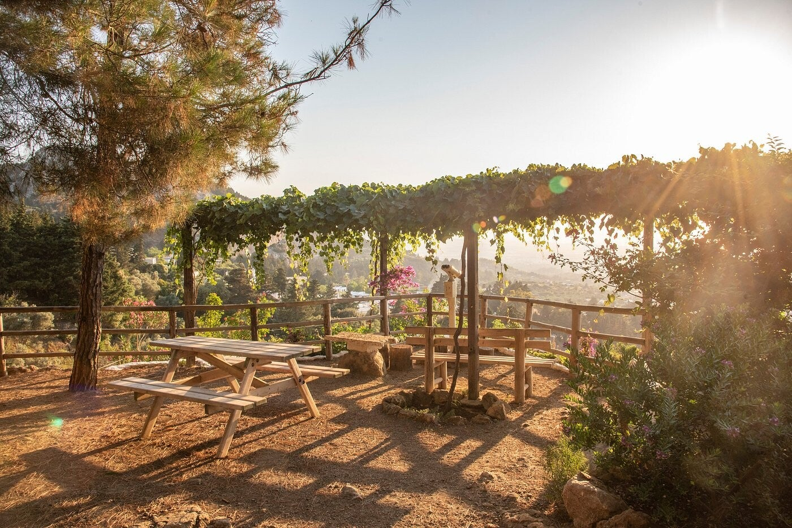

Bezoek
Het is een korte wandeling, geen grote dierentuin. Hoeveel de kaart kost, staat hier niet.

Klein park in Zia met bankjes, een paar hangmatten en een terrasje. Fijn met kinderen. De gids noemde een dagkaart, zodat je kunt lunchen in het dorp en later terugkomen.
Het is een korte wandeling, geen grote dierentuin. Hoeveel de kaart kost, staat hier niet.